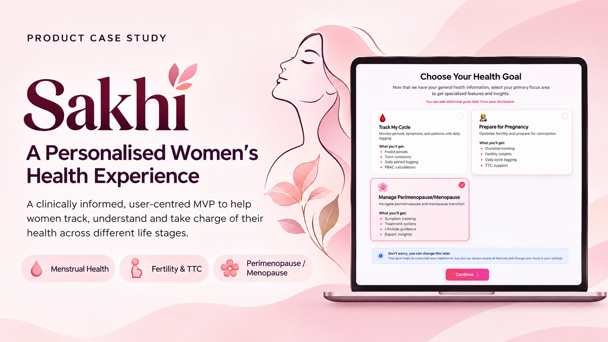

HEALTHCARE · PRODUCT · TECHNOLOGY
Making complex
healthcare problems
feel simpler.
I'm Upasana Mishra — a clinician turned product leader working at the intersection of healthcare, AI, data and human-centred technology.
TURNED
Meaningful outcomes.
I bring clinical understanding, product thinking and cross-functional execution together to turn real-world needs into clear product opportunities.
01 / THE APPROACHA SELECTION OF MY WORK
Selected projects
A mix of enterprise healthcare delivery, independent product concepts and case-study explorations — showing how I frame problems, make decisions and shape experiences.

Sakhi — Women's Health, Made More Personal
A goal-led women's health experience spanning cycle tracking, pregnancy preparation and perimenopause / menopause support.
ONBOARDING · RETENTION
Calm: The first 60 seconds
Rethinking the first moments of a mental wellness experience around how a person feels when they arrive.
Read case study ↗USER NEEDS · PRIORITISATION
Medicine delivery and urgency
Exploring how medicine delivery can recognise urgency and respond to the context behind an order.
Read case study ↗OPERATIONS · CUSTOMER TRUST
The delivery promise breakdown
Investigating the gap between a delivery estimate during discovery and the promise shown at checkout.
Read case study ↗FMCG · PRODUCT STRATEGY
Why healthy eating fails in India
Examining behavioural, affordability and distribution barriers to healthier everyday choices.
Read case study ↗INDEPENDENT MVP · HEALTH EQUITY
Saath: A companion to quit tobacco
A bilingual behaviour-change concept for people who use smokeless tobacco, built around personal triggers, craving support and non-judgmental lapse recovery.
Explore project ↗PRODUCT ROADMAP · CASE STUDY
Arog: Simplifying the clinic day
A clinician-centred product roadmap for reducing cognitive load across the outpatient encounter, informed by QA exploration and early clinician input.
Explore case study ↗PRODUCT PROPOSAL · GAME SYSTEMS
QuestArena: Multiplayer motion challenges
A product proposal to validate a reliable, fair and easy-to-start multiplayer experience in a standalone VR fitness game.
Explore proposal ↗PRODUCT CONCEPT · HUMAN-IN-THE-LOOP
Eldercare: Pendant-based baseline monitoring
Exploring how personal movement baselines could help caregivers and clinicians notice sustained changes in daily routines earlier.
Explore experience ↗WHAT I BRING
Clinical context.
Product clarity.
Healthcare workflowsTranslating clinical and operational needs into usable product experiences.
Data & analytics platformsKPI definition, metric standardisation, reporting workflows and data validation.
Product strategy & executionDiscovery, requirements, prioritisation, stakeholder alignment, QA and release readiness.
AI-enabled experiencesExploring how intelligent systems can reduce cognitive load and support better decisions.
A LITTLE ABOUT ME
From caring for patients
to building for people.
My journey began in clinical medicine. That experience continues to shape how I approach product problems: understand the person, respect the context, reduce friction and make the next useful action clearer.
Today, I work across healthcare technology and data-led products, bringing together domain understanding, product strategy and practical execution.
HAVE A MEANINGFUL PROBLEM TO SOLVE?
Let's build something
that matters.
I'm keen to connect with founders, recruiters and product teams building meaningful products across healthcare, AI, data and technology.